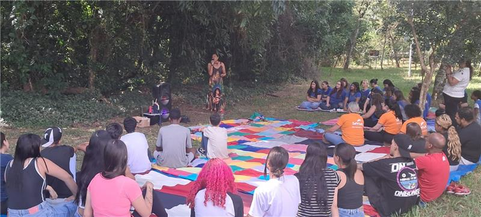
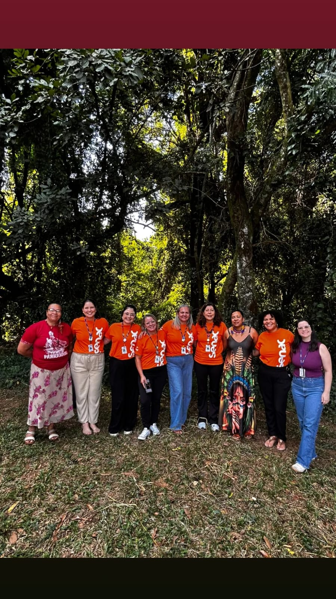
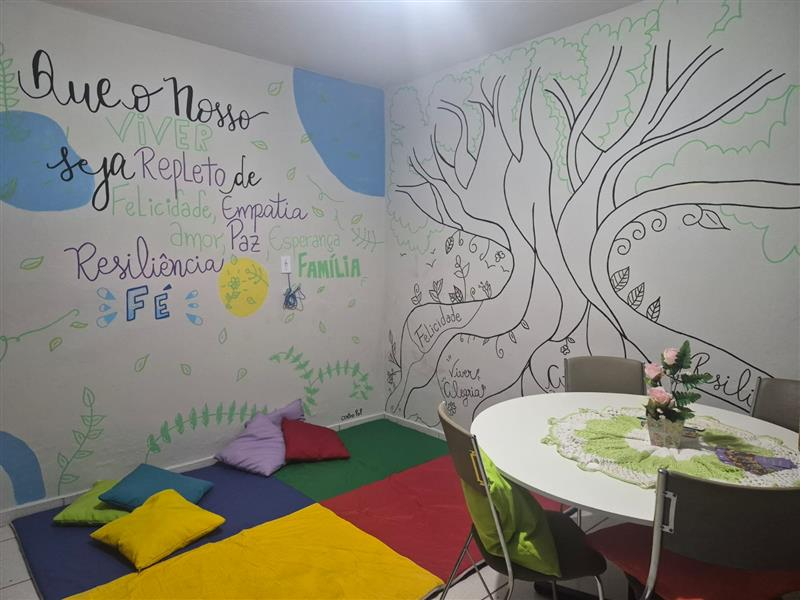
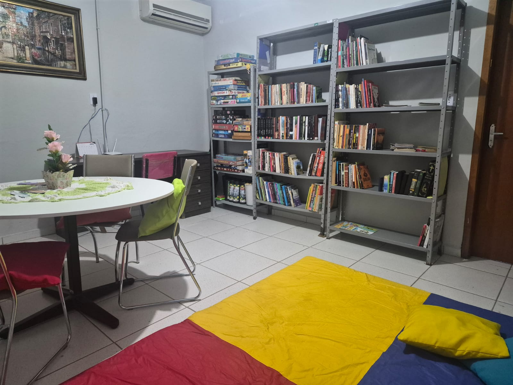

🌱 Inovação que Transforma: Os Impactos do Comitê ECOS
Como o Senac Itapira utiliza suas marcas formativas para gerar impacto social e ambiental real através da integração entre diferentes cursos.
🍃 Vertente Ambiental: Projeto Nascentes e Saberes Ancestrais
No dia 22 de abril, celebrando o Dia da Terra, o Programa Ecos de Sustentabilidade promoveu um encontro potente entre estudantes do Senac Itapira e participantes do Projeto Jovem em Ação. A atividade, intitulada “Aula Aberta – Vozes da Terra: Saberes Ancestrais em Roda”, foi mediada por Marcela Pankararu e teve como foco a valorização dos povos indígenas e a conscientização ambiental.
A proposta surgiu da necessidade de estimular a reflexão sobre a relação entre o ser humano e a natureza, destacando como os conhecimentos tradicionais são fundamentais para a conservação dos recursos naturais, especialmente em espaços locais como as nossas nascentes. O encontro aconteceu em formato de roda de conversa ao ar livre, proporcionando um ambiente propício à troca de saberes e incentivando o protagonismo juvenil.


Momentos da roda de conversa "Vozes da Terra"
🤝 Vertente Social: Centro POP e Integração de Cursos
Após seis meses de planejamento, o Comitê ECOS, com o apoio do setor administrativo do Senac, entregou um projeto transformador: a inauguração de uma biblioteca no Centro POP de Itapira. A ação aconteceu no dia 24 de abril, data que marcou o Dia Mundial do Livro e também os 6 anos de atividades do Centro POP (com apoio da Promoção Social de Itapira).
O evento contou com uma apresentação especial dos alunos do curso Técnico em Teatro, mediados pela docente Aline Cezarone. Eles encenaram "Tribobó City", de Maria Clara Machado — um musical que satiriza clichês de faroeste para abordar temas como poder, justiça e ética de forma lúdica e crítica.


Inauguração da Biblioteca no Centro POP